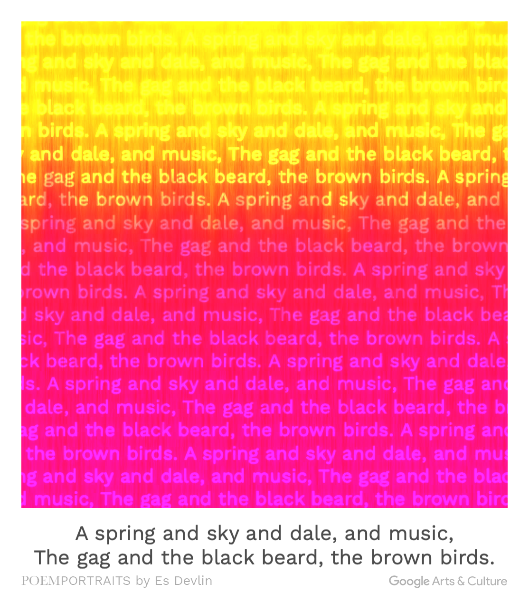

Spring

this poem used many literature to vivdly depicts the weather , temperature an those about things of Spring.
In peom, the mood is following the weather to change. I really appropriate like that.
The poem though plants to convey the moon of humen which is blessing and horror.
Silent is the a opposite thing of the fabricaed poem. Spring is a great seasion because it not cold and not hot , many
people like it but some people was hate that because ther are no snow and we cant go swimming in this season.
This poem is by AI . The absolutely thing is the speed. of course it is faster than human. human need thinking but AI not.
it is a romanticed poem and it talking about the love.
the sipiritual value is persuade audience positive.